AUTOR: Liberto Guillén Álvarez
CURSO: 2º DAM (Multiplataforma)
AÑO: 2025 - 2026
STACK: Flutter 3.x • Firebase • Dart
Este documento constituye la defensa técnica y estética completa del proyecto MelodyVault. Hemos desglosado el sistema en 11 BLOQUES DE INGENIERÍA, cubriendo desde la infraestructura hasta el modelo de datos, la gestión de estado y las optimizaciones finales.
Si eres nuevo en esto, bienvenido. Antes de ver código, entendamos las herramientas que vamos a usar con analogías simples.
Esta guía está ordenada de forma lógica, como si construyéramos una casa. No te saltes pasos.
Antes de escribir una sola línea de código, necesitamos preparar el entorno. Aquí explicamos cómo nace MelodyVault desde cero.
Para ejecutar este proyecto, el entorno de desarrollo debe contar con:
El proyecto no se crea manualmente archivo por archivo. Utilizamos la CLI (Línea de Comandos) de Flutter para generar el esqueleto estándar ("Scaffold") recomendado por Google.
flutter create -t app --org com.liberto.melodyvault --platforms android,ios evaluacion_final
Hemos utilizado flags específicos para profesionalizar la estructura desde el segundo cero:
applicationId en Android y el Bundle ID en iOS. Si no lo definimos ahora, cambiarlo después requiere tocar más de 15 archivos de configuración nativa y puede romper la vinculación con Firebase.package.json de Node.js o el pom.xml de Java. Aquí declaramos versiones exactas de librerías para evitar conflictos.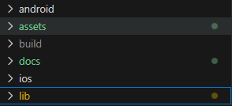
En este bloque analizamos la fontanería invisible que conecta la app con la nube. No es solo "crear un proyecto", es configurar el entorno nativo compilado.
Para que Firebase funcione en Android, necesitamos inyectar servicios de Google en el proceso de compilación de Gradle.
Piensa en este archivo como el DNI o Pasaporte de tu aplicación. Define quién es la app (`applicationId`) y qué "idiomas" habla (versiones de Android).
Hemos elevado la minSdkVersion a **21** (Android 5.0 Lollipop) porque las librerías modernas de Firebase no soportan versiones anteriores (MultiDex issue).
defaultConfig {
applicationId "com.liberto.melodyvault.evaluacion_final"
minSdkVersion 21
targetSdkVersion flutter.targetSdkVersion
}
En iOS, este archivo actúa como el DNI de la aplicación. Contiene las claves API públicas que permiten a la app "presentarse" ante los servidores de Google Auth.
El Problema: Firestore indexa cada campo individualmente. Un filtro (`WHERE userId == ...`) y una ordenación (`ORDER BY createdAt`) requieren cruzar dos índices.
La Solución: Debemos ir a la pestaña "Indexes" en la consola y crear un índice compuesto (Composite Index) para los campos `userId` (Ascendente) y `createdAt` (Descendente).
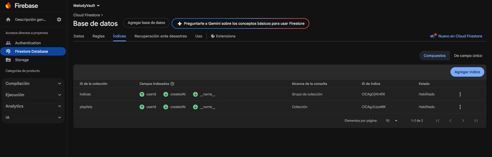
No podemos dejar el cubo de archivos abierto al mundo. Hemos configurado reglas en lenguaje CEL:
allow read, write: if request.auth != null;
flutterfire configure --project=melodyvault-id
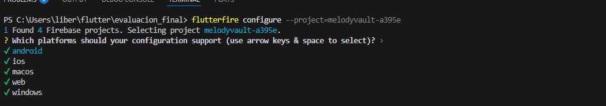
A diferencia de una base de datos SQL tradicional (como MySQL) donde tenemos tablas rígidas y relaciones estrictas, Firestore es una base de datos NoSQL orientada a documentos.
songs, users.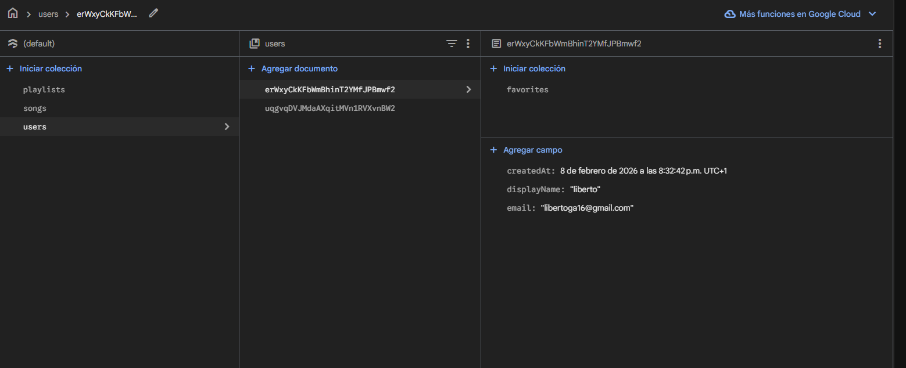
Como Firestore devuelve JSON puro (`Map<String, dynamic>`), necesitamos una capa intermedia que transforme esos datos "crudos" en objetos Dart seguros y tipados. Los modelos en `lib/models/` son clases que actúan como contrato entre la Base de Datos (JSON) y la UI (Objetos).
La clase Song tiene todos sus campos final. Esto significa que una vez creada una instancia de una canción, no se puede modificar. Esta Inmutabilidad previene errores de estado (side-effects) difíciles de rastrear.
No mezclamos la conversión de datos en las pantallas. La clase es responsable de saber cómo convertirse a sí misma.
// Método de Fábrica (Constructor Nombrado)
factory Song.fromFirestore(DocumentSnapshot doc) {
final data = doc.data() as Map<String, dynamic>;
return Song(
id: doc.id, // El ID no está en el JSON, viene del metadato del documento
title: data['title'] ?? '', // Operador Null Coalescing para evitar NullPointers
createdAt: (data['createdAt'] as Timestamp?)?.toDate() ?? DateTime.now(),
);
}
?? (Null Coalescing) exhaustivamente. Si la base de datos devuelve un nulo por error, la app NO crashea, sino que asigna un valor por defecto seguro (cadena vacía)."
Como los objetos son inmutables (`final`), para "editar" una canción no cambiamos su título. Creamos un CLON de la canción antigua con el título nuevo.
Song copyWith({String? title, String? artist...}) {
return Song(
title: title ?? this.title, // Si pasas null, mantengo el valor viejo
artist: artist ?? this.artist,
...
);
}
En una base de datos Relacional (SQL) tendríamos una tabla intermedia `PlaylistSongs`. En NoSQL, optimizamos para lectura incrustando un array de IDs directamente en la playlist.
final List<String> songIds;: Solo guardamos las referencias, no duplicamos los datos de las canciones.int get songCount => songIds.length;: Un "getter calculado" que nos da información derivada instantánea sin ocupar espacio en memoria.Entramos en el cerebro de la aplicación. Aquí la lógica es pura, sin contaminación visual de Widgets. Los servicios son la abstracción de la base de datos.
El patrón Singleton es como la regla de la película Los Inmortales: "Solo puede quedar uno".
Aunque usamos `Provider` para inyectar servicios, internamente FirebaseFirestore.instance utiliza este patrón. Esto garantiza que solo haya una conexión de socket abierta con el servidor de Google, independientemente de cuántas veces llamemos a la base de datos. Eficiencia de memoria pura.
Este servicio encapsula FirebaseAuth. Su función crítica es mapear los errores crípticos de Firebase a un lenguaje humano.
// auth_service.dart
Future<void> signIn(String email, String password) async {
try {
await _auth.signInWithEmailAndPassword(email: email, password: password);
} on FirebaseAuthException catch (e) {
if (e.code == 'user-not-found') throw 'No existe cuenta con ese email.';
if (e.code == 'wrong-password') throw 'Contraseña incorrecta.';
throw 'Error desconocido: ${e.message}';
}
}
El método getSongs() es una tubería de datos viva. No pedimos los datos una vez; nos "suscribimos" a ellos.
Stream<List<Song>> getSongs() {
return _firestore.collection('songs')
.orderBy('createdAt', descending: true)
.snapshots() // FLUJO DE DATOS, NO FUTURE
.map((snapshot) {
return snapshot.docs.map((doc) => Song.fromFirestore(doc)).toList();
});
}
Aquí manejamos la complejidad de relacionar entidades en NoSQL. Una Playlist guarda un array de strings `['songID1', 'songID2']`. Usamos `FieldValue.arrayUnion()` para añadir canciones, lo que garantiza que no haya duplicados (Set matemático) en la operación atómica de servidor.
Los servicios (SongService, PlaylistService) son "tontos": solo saben traer datos crudos. La lógica de negocio real vive en MusicProvider.
_isLoading = true y notificamos a la UI para que bloquee los botones.
MelodyVault implementa un sistema de diseño propio ("Design System") en lib/config/app_theme.dart.
Piensa en esto como el Manual de Identidad Corporativa de una empresa. Define las reglas que todos los diseñadores deben seguir.
Hemos elegido una paleta basada en el líder del mercado para que el usuario sienta familiaridad inmediata.
Usamos la fuente Outfit. Es una tipografía geométrica sans-serif moderna. Funciona excelente en pantallas móviles por su "x-height" generosa, lo que hace que los textos pequeños (títulos de canciones) sean legibles.
La app fuerza el modo oscuro (`Brightness.dark`). En aplicaciones de consumo de medios, el modo oscuro reduce la fatiga visual (Eye Strain) del usuario que suele escuchar música de noche.
Inputs: Tienen un fondo `AppColors.surfaceLight` (Gris medio) para indicar interactividad. Botones (Pills): Usamos `BorderRadius.circular(24)` para botones completamente redondos, más amigables al tacto.
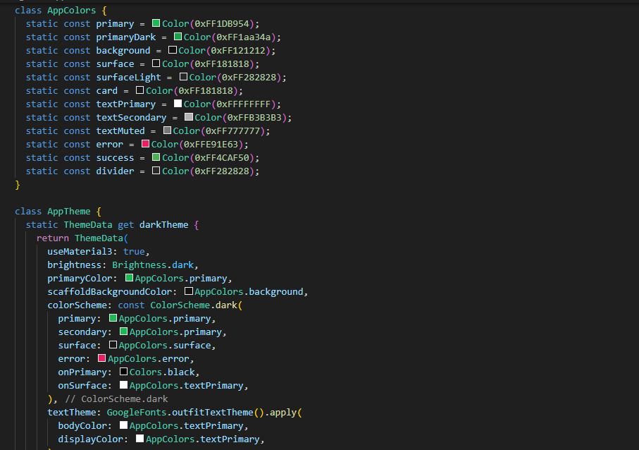
La puerta de entrada. Analizamos cómo gestionamos la identidad del usuario.
Usamos ChangeNotifier para exponer el estado de la sesión a toda la app.
Contiene una variable privada `_user`. Cuando esta cambia, llamamos a `notifyListeners()`, lo que provoca que el `MaterialApp` en el `main.dart` redibuje la ruta inicial (de Login a Home).
La pantalla LoginScreen no es solo dos inputs. Tiene gestión de estado local (`_isLoading`).
IconButton con un icono de ojo (`Icons.visibility`) alterna la propiedad `obscureText` del input.ScaffoldMessenger.of(context).showSnackBar() para mostrar alertas rojas flotantes si el login falla.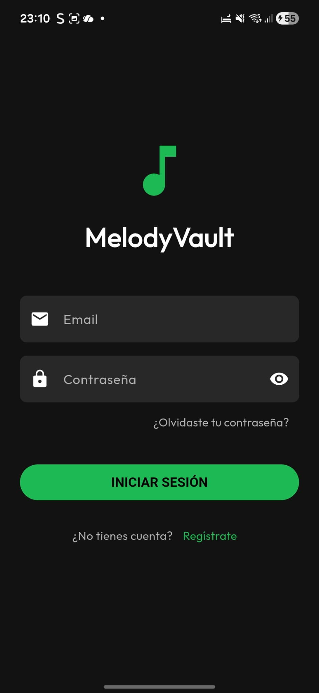
Utilizamos TextFormField con validadores estrictos.
validator: (value) {
if (value == null || !value.contains('@')) {
return 'Introduce un email válido';
}
return null;
}
La validación ocurre en el cliente antes de enviar nada a Firebase, ahorrando ancho de banda y latencia.
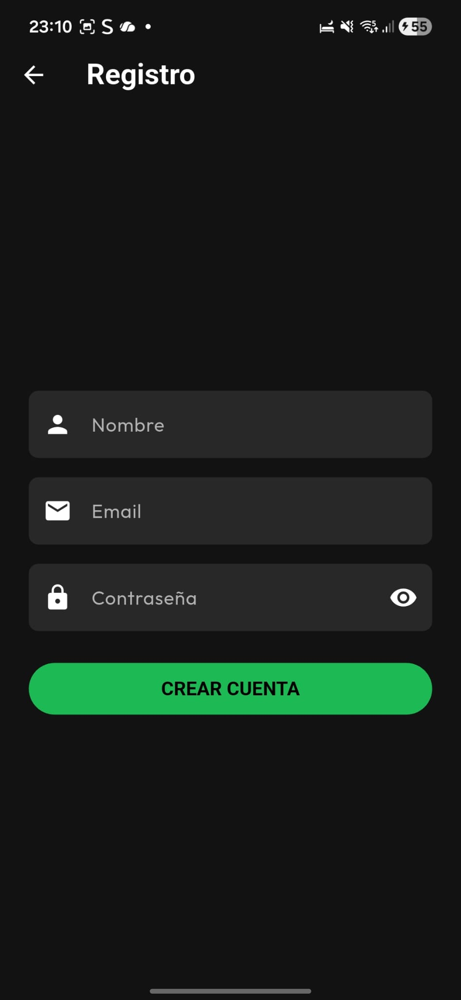
Una pantalla minimalista que llama a authService.sendPasswordResetEmail(email). Firebase se encarga de enviar el correo con el enlace mágico.
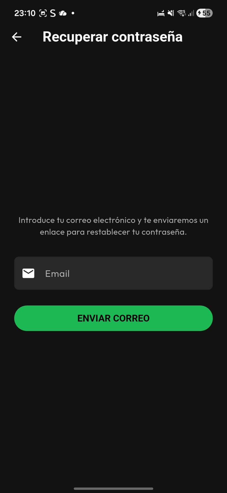
Una de las características más críticas de una app móvil es que el usuario no tenga que loguearse cada vez que abre la app.
Esto se logra en el widget raíz AuthWrapper (en main.dart).
class AuthWrapper extends StatelessWidget {
@override
Widget build(BuildContext context) {
// Escucha activa del estado de autenticación
final auth = context.watch<AuthProvider>();
// Switch automático de pantallas
if (auth.isAuthenticated) {
return const HomeScreen();
}
return const LoginScreen();
}
}
La atomización de la interfaz. Extraemos lógica repetitiva a widgets pequeños.
Este widget es la célula básica de la app.
ClipRRect para redondear las esquinas de la imagen.
// Lógica de visualización de botones de admin
trailing: isOwner
? Row(mainAxisSize: MainAxisSize.min, children: [EditBtn, DeleteBtn])
: LikeButton(),
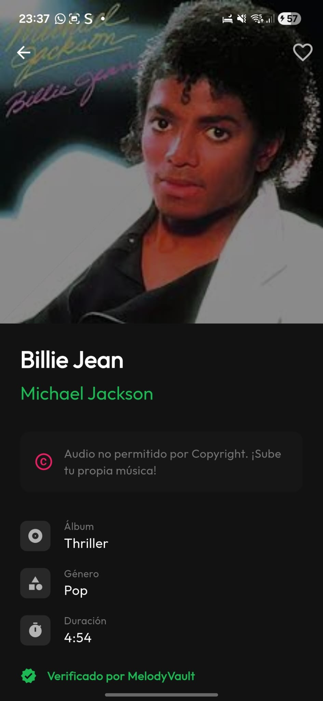
Usado en el GridView. Utiliza un widget Stack para superponer texto sobre imagen.
Para asegurar que el texto blanco se lea sobre cualquier imagen, añadimos un Gradiente Negro (Shader) en la parte inferior de la tarjeta.
Container(
decoration: BoxDecoration(
gradient: LinearGradient(
begin: Alignment.topCenter,
end: Alignment.bottomCenter,
colors: [Colors.transparent, Colors.black87],
),
),
)
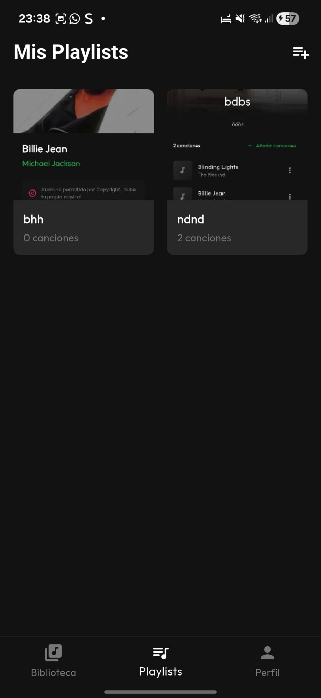
Componentes de la barra de reproducción. El slider no es nativo estándar; está personalizado para que el "thumb" (la bolita) sea del color primario y el "track" inactivo sea gris oscuro.
El ensamblaje final de la aplicación.
La pantalla principal (`HomeScreen`) actúa como un "Shell" (Cascarón).
Utiliza un BottomNavigationBar para movernos entre secciones.
Lo crítico aquí es el uso de IndexedStack.
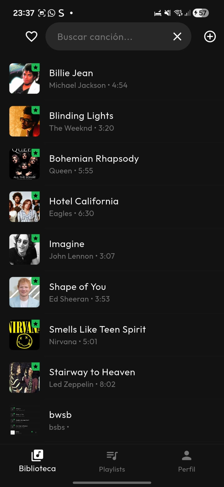
Usamos GridView.builder. Definimos un delegado fijo SliverGridDelegateWithFixedCrossAxisCount(crossAxisCount: 2) para tener siempre dos columnas, ideal para móvil.
Esta es la pantalla más compleja en estado. Interactúa con el paquete audioplayers.
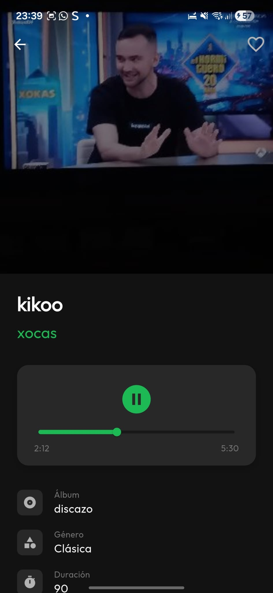
Para un efecto visual premium, usamos Slivers.
SliverAppBar permite que la imagen de la playlist se expanda al estirar la lista hacia abajo y se contraiga en una barra pequeña al hacer scroll hacia arriba.
Además, hacemos un "Join" lógico manual: leemos el array de IDs de la playlist y filtramos la lista global de canciones para mostrar solo las coincidentes.
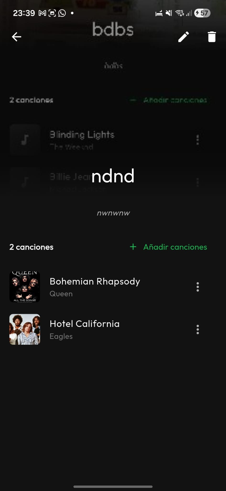
Pantalla unificada para Crear y Editar.
Usa FilePicker para seleccionar archivos mp3 y jpg del almacenamiento local.
El proceso de guardar no es atómico.
Todo envuelto en un bloque try/catch para gestionar fallos de red a mitad de subida.
El ciclo de vida del dato no termina en la creación. La gestión de la modificación (Update) y eliminación (Delete) es donde la mayoría de apps fallan. Aquí analizamos cómo MelodyVault maneja estas operaciones críticas.
Editar en Flutter es complejo porque los datos antiguos deben pre-llenar el formulario.
El constructor de `SongFormScreen` acepta un parámetro opcional `final Song? song`.
En el initState, preguntamos: "¿Me han pasado una canción?".
@override
void initState() {
super.initState();
if (widget.song != null) {
// ESTADO DE EDICIÓN: Prelleno los controladores
_titleController.text = widget.song!.title;
_artistController.text = widget.song!.artist;
// Guardo las URLs viejas por si el usuario no sube archivos nuevos
_imageUrl = widget.song!.imageUrl;
}
}
Un error de novato es borrar el documento de la base de datos (`firestore.delete()`) pero dejar los archivos de audio e imagen en el Storage. Esto crea "archivos huérfanos" que ocupan espacio y cuestan dinero.
Nuestra Solución Robusta: Antes de borrar el registro en Firestore, capturamos las URLs de los archivos y ordenamos su destrucción en el Storage.
Future<void> deleteSong(Song song) async {
// 1. Borrar Ficheros Físicos (Limpieza)
if (song.imageUrl.isNotEmpty) {
await _storage.refFromURL(song.imageUrl).delete();
}
if (song.audioUrl.isNotEmpty) {
await _storage.refFromURL(song.audioUrl).delete();
}
// 2. Borrar Registro Lógico
await _firestore.collection('songs').doc(song.id).delete();
}
Para el borrado, evitamos el típico botón "Papelera". Implementamos el patrón moderno "Swipe to Delete" usando el widget nativo Dismissible.
El deslizamiento es fácil de hacer por error. Por eso interceptamos la acción con confirmDismiss.
confirmDismiss: (direction) async {
return await showDialog(
context: context,
builder: (ctx) => AlertDialog(
title: Text('¿Borrar canción?'),
content: Text('Esta acción es irreversible y eliminará los archivos.'),
actions: [
TextButton(onPressed: () => Navigator.of(ctx).pop(false), child: Text('CANCELAR')),
TextButton(onPressed: () => Navigator.of(ctx).pop(true), child: Text('BORRAR')),
],
),
);
}
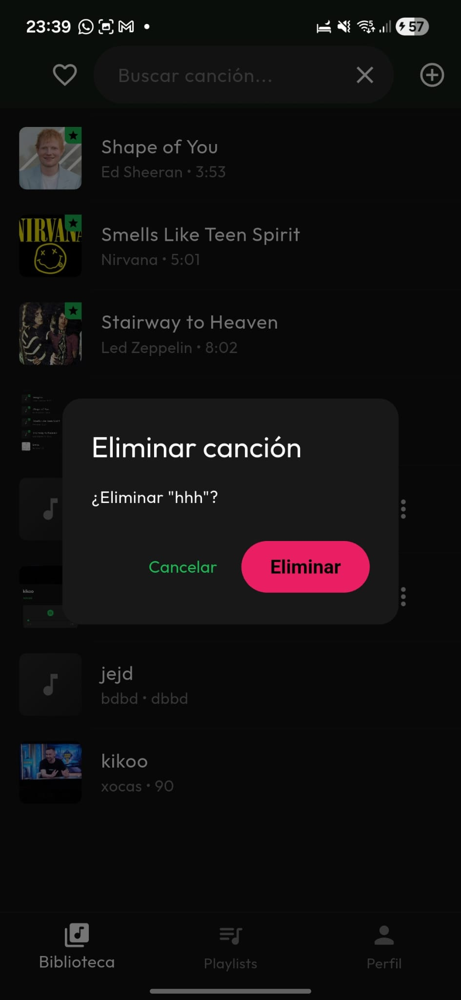
Para los favoritos, no usamos un array simple en el documento del usuario. Usamos el patrón de Subcolecciones.
La ruta es: users/{userId}/favorites/{songId}.
¿Por qué Subcolecciones?
Más allá de que "funcione", una app de 10 debe ser eficiente y agradable. Hemos implementado optimizaciones técnicas que marcan la diferencia.
Una app de música carga muchas carátulas. Si usáramos Image.network estándar, cada vez que hacemos scroll la app volvería a descargar la imagen, gastando datos y batería.
Solución: Usamos la librería cached_network_image.
Esto guarda las imágenes en la caché local del dispositivo. Si el usuario vuelve a ver la misma canción, la carga es instantánea y offline.
CachedNetworkImage(
imageUrl: song.imageUrl,
placeholder: (context, url) => ShimmerLoading(), // Efecto de carga elegante
errorWidget: (context, url, error) => Icon(Icons.error),
),
En lugar de incrustar un campo de texto gigante que ocupa toda la AppBar, hemos creado un widget AnimatedSearchBar.
Al pulsar la lupa, el campo se expande con una animación suave (`AnimatedContainer` de 300ms). Esto es un uso avanzado de Animaciones Implícitas de Flutter, mejorando la percepción de calidad de la app.
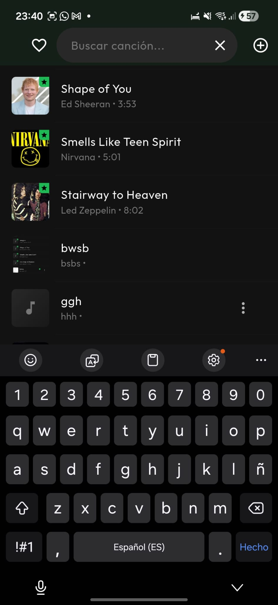
Una pantalla blanca es un error de diseño. Si no hay canciones, mostramos un EmptyStateWidget con un icono grande y una invitación a la acción ("¡Añade tu primera canción!").
Esto guía al usuario y evita la sensación de "app rota".
MelodyVault cumple estrictamente con la arquitectura Productor-Consumidor (Provider) y separa limpiamente la lógica de negocio (Servicios) de la interfaz (Widgets). Hemos priorizado la robustez (manejo de errores, modo offline con caché) y la Separación de Responsabilidades (Separation of Concerns): la UI solo pinta, el Provider gestiona el estado, y el Servicio habla con la nube.
Si el proyecto continuara, los siguientes pasos naturales serían: